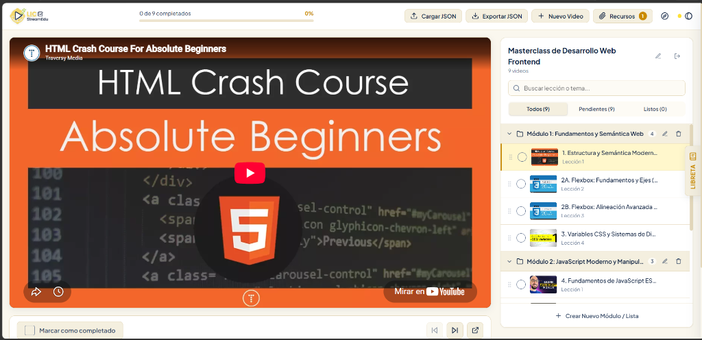
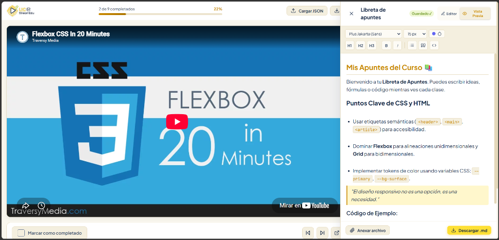

Manual de Usuario de LICStreamEdu
Guía exhaustiva, paso a paso y orientada a la productividad. Aprende a dominar todas las herramientas, atajos, formatos de importación y personalizaciones de la plataforma de aprendizaje autodidacta más rápida y privada.
0% Servidores
100% de datos en tu navegador
8 Paletas
Alto contraste WCAG AAA
Libreta .md
Auto-guardado & Descarga nativa
JSON Nativo
Exporta & Comparte tus cursos
Introducción y Filosofía
LICStreamEdu es un entorno de reproducción inteligente y toma de notas diseñado para estructurar cursos educativos a partir de videos de YouTube, playlists y recursos digitales, sin distracciones de algoritmos ni publicidad lateral.
Arquitectura Local (Zero-Server Privacy)
A diferencia de las plataformas tradicionales que requieren inicio de sesión y rastrean tu actividad en bases de datos remotas, LICStreamEdu opera 100% en el lado del cliente (tu navegador). Tus cursos, apuntes, tiempos y progreso residen exclusivamente en el almacenamiento seguro de tu computadora (`localStorage` e `IndexedDB`).
Requisitos del Sistema y Compatibilidad
La aplicación no requiere instalación de software auxiliar ni configuración de servidores locales. Funciona
directamente abriendo el archivo index.html en cualquier navegador web moderno:
-
Google Chrome / Brave / Edge: Soporte total, incluyendo la moderna API nativa
window.showSaveFilePickerpara descargas directas de notas. -
Mozilla Firefox / Apple Safari: Soporte completo con fallback transparente de descarga automática mediante blobs.
-
Dispositivos Móviles y Tablets: Interfaz con diseño fluido adaptativo (Mobile-First) y cajón desplegable lateral.
Experiencia de Bienvenida y Spotlight Tour
La primera vez que inicias LICStreamEdu, la aplicación presenta un modal interactivo de bienvenida que te permite elegir entre dos caminos de aprendizaje:
Explorar Curso Demo
Carga instantáneamente la «Masterclass de Desarrollo Web Frontend» con 9 lecciones organizadas y activa el Spotlight Tour guiado.
Comenzar desde Cero
Abre el lienzo en blanco para que puedas cargar tus propios archivos JSON o registrar videos manualmente con el botón «+ Nuevo Video».
El Recorrido Guiado Interactivo (Spotlight Tour)
El tour oscurece la pantalla suavemente y proyecta un foco iluminado sobre los cinco elementos neurálgicos de la aplicación:
| Paso | Elemento Resaltado | Explicación y Función |
|---|---|---|
| 1 | Widget de Progreso y Temas | Muestra el porcentaje completado en tiempo real y el botón de paletas de color. |
| 2 | Reproductor 16:9 | El visor principal de YouTube con controles de lección anterior/siguiente. |
| 3 | Módulos y Lecciones | Estructura jerárquica con acordeones, miniaturas y casillas de verificación. |
| 4 | Búsqueda y Filtros Rápidos | Filtra al instante entre lecciones pendientes y completadas. |
| 5 | Libreta de Apuntes | Cajón lateral con editor de Markdown en tiempo real y tipografías intercambiables. |
¿Cómo reiniciar el Tour en cualquier momento?
Puedes reactivar el recorrido guiado cuando lo desees haciendo clic en el botón con ícono de brújula ubicado en la barra superior, o usando el atajo de teclado correspondiente.
Anatomía de la Barra Superior (Topbar)
La barra superior es el centro neurálgico de control. A continuación se presenta la captura de la aplicación en el tema Lemon Ice-Cream con los puntos funcionales clave:

Logotipo Inteligente
Alterna automáticamente entre logo-light.png y logo-dark.png para asegurar
contraste óptimo según el tema.
Barra de Progreso
Muestra exactamente cuántas lecciones has completado (ej. 0 de 9 completados - 0%) con relleno visual dinámico.
Cargar JSON
Abre el modal para importar cursos mediante archivo local (.json), arrastrar y soltar, o URL remota con CORS.
Exportar JSON
Descarga un archivo con toda la estructura, lecciones añadidas, títulos editados y tu progreso actual guardado.
+ Nuevo Video
Permite registrar un video manual indicando módulo de destino, título, URL de YouTube y tiempos de recorte.
Recursos (Badge)
Muestra el total de enlaces, documentación y archivos adjuntos del curso activo con un contador dinámico amarillo.
Brújula (Tour)
Botón de reinicio instantáneo del recorrido interactivo paso a paso para refrescar la memoria sobre las herramientas.
Selector de Temas
Abre el menú con las 8 paletas de color con punto indicador en vivo del tono acento activo.
Reproductor y Controles de Lección
El reproductor de LICStreamEdu está optimizado para YouTube con estrictas directivas de privacidad, relación de aspecto 16:9 y soporte de fragmentación por minutos:
Formatos de Enlace de YouTube Soportados
Puedes ingresar casi cualquier variante de URL de YouTube en la aplicación:
-
URLs estándar de navegador:
https://www.youtube.com/watch?v=VIDEO_ID -
URLs acortadas de compartir:
https://youtu.be/VIDEO_ID -
URLs con timestamps de inicio y fin:
https://www.youtube.com/watch?v=VIDEO_ID&t=120so parámetros JSONstart: 60, end: 300para reproducir solo el fragmento educativo deseado.
Barra de Acciones Inferior
Justo debajo del reproductor se ubica la barra de navegación inmediata de la lección:
| Elemento | Acción / Comportamiento | Efecto Inmediato |
|---|---|---|
| Casilla «Marcar como completado» | Al hacer clic se marca la lección con un check SVG animado. | Aumenta la barra de progreso general y cambia el estado en la lista lateral. |
| Botón Anterior (⏮) | Salta a la lección previa del mismo módulo o del módulo anterior. | Carga el video inmediatamente sin recargar la página. |
| Botón Siguiente (⏭) | Avanza a la lección siguiente en el orden del curso. | Si la lección previa no estaba marcada, te permite continuar fluidamente. |
| Botón Enlace Externo (↗) | Abre el video en una nueva pestaña de YouTube. | Útil si deseas leer comentarios o acceder a subtítulos automáticos en otros idiomas. |
Libreta de Apuntes en Tiempo Real (Markdown)
La Libreta de Apuntes es un cajón lateral deslizante que te permite tomar notas estructuradas mientras miras la clase sin perder de vista la lección:

Herramientas de Edición y Tipografía
La libreta cuenta con una barra de herramientas completa en la parte superior:
-
Selector de Tipografía: Alterna instantáneamente entre tres familias de fuentes optimizadas:
•Plus Jakarta (Sans): Moderna, limpia y de máxima legibilidad.
•JetBrains Mono: Perfecta para cursos de programación y snippets de código.
•Merriweather: Tipografía serif para lectura cómoda de apuntes largos. -
Selector de Tamaño: Elige entre
13px,15px,17pxo19pxsegún tus preferencias visuales. -
Botones Rápidos de Markdown: Encabezados (
H1,H2,H3), Negrita (B), Cursiva (I), Listas (≡), Citas (”) y Bloques de Código (<>). -
Pestañas Editor / Vista Previa: Alterna entre la escritura en texto plano y la previsualización formateada con resaltado de sintaxis, citas decoradas y etiquetas en vivo.
Anexar y Descargar Apuntes
Botón «Anexar archivo»
Permite importar apuntes existentes en formato .md o .txt desde tu
computadora, sumándolos al final de tus notas actuales sin sobrescribir lo que ya tenías.
Botón «Descargar .md» (Windows Picker)
Utiliza la API nativa del sistema operativo para abrir la ventana de guardado de Windows, permitiéndote elegir la carpeta de destino y el nombre exacto del archivo.
Auto-Guardado Inteligente («Guardado ✓»)
No necesitas presionar guardar constantemente. Cada pulsación de tecla se sincroniza en milisegundos con el almacenamiento local del navegador, mostrando el badge verde confirmatorio.
Gestión de Cursos y Especificación JSON
LICStreamEdu utiliza un esquema JSON abierto y universal. Puedes estructurar tus propios cursos en cualquier
editor de texto o compartir archivos .json con tus compañeros de estudio:
Estructura Estándar de un Archivo de Curso
{
"title": "Masterclass de Desarrollo Web Frontend",
"description": "Curso completo desde fundamentos hasta arquitecturas avanzadas",
"version": "2.0.0",
"resources": [
{
"title": "MDN Web Docs",
"url": "https://developer.mozilla.org",
"type": "link"
}
],
"modules": [
{
"id": "mod_1",
"title": "Módulo 1: Fundamentos y Semántica Web",
"lessons": [
{
"id": "les_1_1",
"title": "1. Estructura y Semántica Moderna en HTML5",
"url": "https://www.youtube.com/watch?v=UB1O30fR-EE",
"duration": "1:08:44",
"completed": false,
"start": 0,
"end": 4124,
"notes": "Introducción a etiquetas header, nav, main y footer."
}
]
}
]
}Campos Técnicos de cada Lección
| Campo | Tipo | Obligatorio | Descripción y Ejemplo |
|---|---|---|---|
id |
String | Sí | Identificador único alfanumérico (ej. "les_01"). |
title |
String | Sí | Nombre de la lección visible en la lista lateral. |
url |
String | Sí | Enlace de YouTube (completo o acortado). |
completed |
Boolean | No | true o false para el estado de progreso. |
start / end |
Number | No | Segundo exacto de inicio y fin para reproducir solo un segmento del video. |
notes |
String | No | Apuntes o descripción contextual de la lección. |
Gestor de Recursos y Materiales
Al hacer clic en el botón «Recursos» de la barra superior, se despliega el panel modal de documentación asociada al curso activo.
-
Badge Contador: El botón superior incluye un indicador numérico que refleja cuántos recursos están disponibles en el curso en todo momento.
-
Tipos de Enlaces: Documentación oficial, repositorios de código en GitHub, plantillas de diseño en Figma o archivos PDF descargables.
-
Apertura Segura: Todos los enlaces externos se abren en pestañas independientes con los atributos de seguridad
rel="noopener noreferrer".
Los 8 Temas de Color y Accesibilidad
LICStreamEdu cuenta con 8 paletas minuciosamente calibradas para ofrecer un contraste cromático superior a los estándares de accesibilidad WCAG AAA:
Obsidian Dark
Fondo oscuro con acento ÍndigoCyber Emerald
Verde Esmeralda y MentaNordic Frost
Azul Polar con Cian GlaciarSunset Amber
Carbón cálido y Ámbar FuegoClean Light
Modo claro y Azul ZafiroRose Quartz
Pizarra y Rosa EléctricoLemon Ice-Cream ⭐
Vainilla, Limón y Menta (Activo)Iron-Man
Carmesí Stark, Oro y Arc CyanAdaptación Inteligente de Logotipos
Al cambiar de tema, la aplicación detecta si la paleta seleccionada es de fondo claro (como Clean
Light o Lemon Ice-Cream) o fondo oscuro (como Obsidian o
Iron-Man). Automáticamente conmuta el archivo del isotipo a logo-light.png o
logo-dark.png para garantizar una legibilidad inmaculada.
Atajos de Teclado y Preguntas Frecuentes
Tabla de Atajos de Teclado
| Función / Acción | Atajo de Teclado | Contexto |
|---|---|---|
| Avanzar al siguiente paso del Tour | Enter o → Flecha Derecha | Durante el Spotlight Tour |
| Retroceder al paso previo del Tour | ← Flecha Izquierda | Durante el Spotlight Tour |
| Cerrar / Omitir el Tour | Esc | Durante el Spotlight Tour |
| Cerrar modales o cajón de notas | Esc | En cualquier ventana emergente |
| Imprimir o Exportar Manual a PDF | Ctrl + P | En esta página de manual |